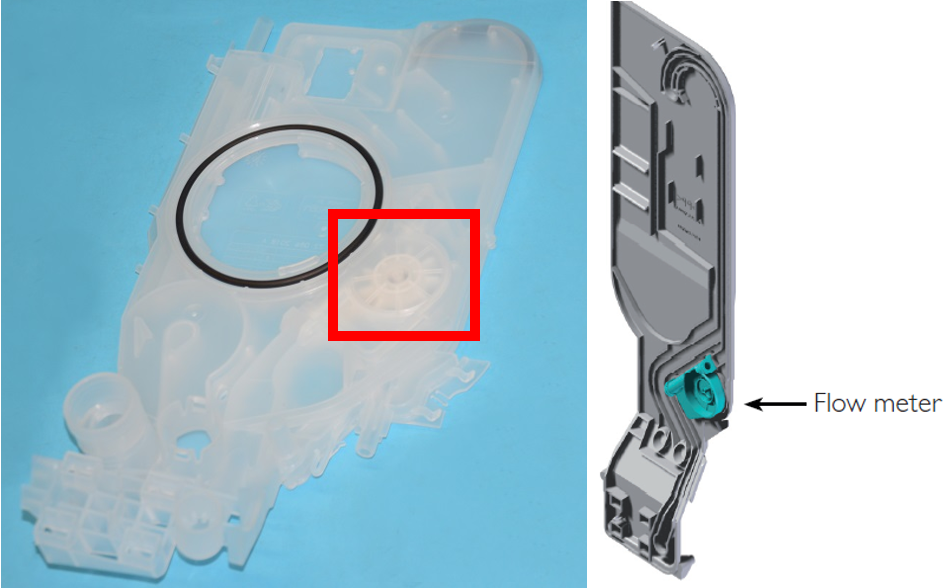

DW30-as mosogatógép család F12-es hibakódja esetén követendő eljárás
Az F12 hiba vízbetöltési hibát jelenti.
A gépnek két módja van az F12 észlelésére:
• Ha a gép vízbetöltési módja CP-re (impulzusra) van beállítva,
akkor az azt jelenti, hogy az áramlásmérő nem érzékelt
30 másodpercen belül elegendő impulzust, és így a program leáll.
• Ha a gép vízbetöltési módja CL-re (idő) van beállítva,
akkor az azt jelenti, hogy a betöltés időre történik
és a vízszintet nyomásérzékelő is méri.
A CL vízbetöltési mód csak nyomásérzékelővel ellátott gépeken lehetséges.
Ha a nyomásérzékelő nem érzékeli a megfelelő vízszintet, a program leáll.
Az F12-es hibakód esetén követendő javítási eljárás
- 1. Húzd le a kifolyócsövet a szifonről vagy fali csatlakozóról.
Ellenőrizd, hogy a leeresztő tömlő nincs-e eltömődve vagy megtörve, kifolyási magassága megfelelő-e?
Nézz a cső végébe nincs-e benne mechanikai akadály, majd tartsd egy vödör főlé és rögzítsd oda a teszt idejére!
Tiszta és dugulásmentes a cső ? - Igen
- Kifolyócső ellenőrizve és tiszta
- 2. Vedd le a befolyócsövet a csapról és ellenőrizd a benne lévő szűrő tisztaságát!
Tarts egy vödröt a csap alá és nyisd meg.
15 másodperc alatt 3 liter viznek kell minimum kifolyni a megfelelő működéshez!
Megfelelő a víz beáramlása, mennyisége és nyomása? - Igen
- Vízcsap nyitva, víznyomás megfelelő
- 3. Ellenőrizd az átfolyásmérőt.
Az átfolyásmérő hibás jelet adhat, ha a gép belsejében víz van.

Azt is ellenőrizni kell, hogy a csatlakozó csövek megfelelően vannak-e csatlakoztatva a labirintusra.
Az átfolyásmérő egy forgó lapátkerék, rajta két mágnessel.
A labirintusban egy kis áramköri lapon egy REED relé helyezkedik el.
A csatlakozón szakadásvizsgálóval ellenőrizd a relé működését!
Ellenörizd a vezérlőegység csatlakozójánál is a REED relé működését!
Nézd meg, hogy a labirintus felső részén lévő félkör alakú
nyomáscsökkentő alkatrészből rendesen folyik-e ki a víz.
Ha nem vagy csak csepeg, akkor cserélj labirintust!
Működik az áramlásérzékelő ? - Igen
- Áramlásérzékelő nem hibás
- 4. Ha mindkét alkatrész működik és a gép megfelelően van beszerelve:
tisztítsd meg teljesen a szűrőket és az iszapcsapdát!
Végezzd el a teljes resetet r01, majd kalibrálást r02.

Futtass öblítő programot.
Ha ismét megjelenik az F12, állítsd a gépet CL-re (időszabályzott vízbetöltés).
Ha most sem működik a készülék, milyen vízbetöltésre van beállítva?
- CL
- Hibás működés CL beállításnál
- Ha a készülék CL-re van állítva, és a hiba továbbra is megjelenik,
ki kell cserélni a nyomásérzékelőt.

-
Végezz el teljes resetet és kalibrálást!
Tisztítás után a szervizprogramban futtasd le az r01- teljes resetet és az r02 kalibrálást!
- Ha a készülék CL-re van állítva, és a hiba továbbra is megjelenik,
- CP
-
Ha a készülék CP impulzustöltésre van beállítva, labirintust kell cserélni.
-
Végezz el teljes resetet és kalibrálást!
Tisztítás után a szervizprogramban futtasd le az r01- teljes resetet és az r02 kalibrálást!
- 4. Ha mindkét alkatrész működik és a gép megfelelően van beszerelve:
- 3. Ellenőrizd az átfolyásmérőt.
- Nem
Cserélj labirintust (átfolyásmérőt vagy vezetéket)
- 2. Vedd le a befolyócsövet a csapról és ellenőrizd a benne lévő szűrő tisztaságát!
- Nem
Ha nem folyik elég víz a csapból, cseréltesd ki az ügyféllel, mert ez nem készülékhiba!
Tisztítsd meg a befolyócső szürőjét!
Cserélj befolyócsővet
Tisztítsd meg a szifont és a kifolyócsövet!
Ügyelj a törésmentes és megfelelő magasságú kifolyócső elhelyezésre!
Főoldal